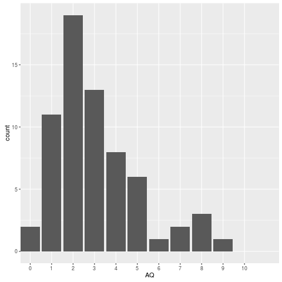

Answer to Exercise: Scoring the AQ
The final script containing a model answer can be downloaded here. (Other solutions are possible.)
First, load in the packages we will need for data processing and visualization.
library("dplyr") library("tidyr") library("ggplot2")
Now load in the data itself.
## read in the data dat <- read.csv("sm_data.csv", skip = 1, stringsAsFactors = FALSE)
Note that we have used the argument “skip = 1” because for some reason, Survey Monkey left the first line blank. Let’s have a glimpse():
glimpse(dat)
Observations: 66 Variables: 14 $ Id (int) 16, 17, 18, 19, 20, 21, 22, 28, 29, 31, 34, 35, 39, 40,... $ Gender (chr) "Male", "Male", "Male", "Male", "Male", "Female", "Fema... $ Age (int) 20, 40, 33, 18, 24, 42, 19, 49, 18, 18, 32, 18, 20, 39,... $ Participate (int) 1, 1, 1, 1, 1, 1, 1, 1, 1, 1, 1, 1, 1, 1, 1, 1, 1, 1, 1... $ Q1 (chr) "Slightly Disagree", "Definitely Agree", "Definitely Ag... $ Q2 (chr) "Definitely Agree", "Slightly Agree", "Definitely Agree... $ Q3 (chr) "Slightly Disagree", "Slightly Agree", "Slightly Agree"... $ Q4 (chr) "Definitely Disagree", "Definitely Agree", "Definitely ... $ Q5 (chr) "Slightly Agree", "Definitely Agree", "Definitely Agree... $ Q6 (chr) "Slightly Agree", "Definitely Agree", "Definitely Agree... $ Q7 (chr) "Slightly Agree", "Slightly Agree", "Slightly Agree", "... $ Q8 (chr) "Definitely Disagree", "Slightly Disagree", "Definitely... $ Q9 (chr) "Slightly Agree", "Slightly Agree", "Definitely Agree",... $ Q10 (chr) "Slightly Agree", "Slightly Disagree", "Definitely Disa...
We will pull out the participant information into a separate table called part_info.
## pull out participant information part_info <- dat %>% select(Id, Gender, Age, Participate)
Now let’s reshape the question data (columns Q1 to Q10) from wide to
long, and store this in the variable qdat.
qdat <- dat %>%
select(Id, Q1:Q10) %>%
gather(Question, Response, Q1:Q10) %>%
arrange(Id, Question)
Now let’s create our tables that link responses to scores for the two different formats. We will type the data directly into a data_frame object. (The data_frame() function is a dplyr way of creating a particular kind of data frame. It operates similarly to the base data.frame() function, but has more sensible defaults, e.g., stringsAsFactors = FALSE.)
## table link format to response score rscores <- data_frame(Format = rep(1:2, each = 4), Response = rep(c("Definitely Agree", "Slightly Agree", "Slightly Disagree", "Definitely Disagree"), times = 2), Score=c(1, 1, 0, 0, 0, 0, 1, 1))
Let’s have a look:
rscores
Source: local data frame [8 x 3] Format Response Score (int) (chr) (dbl) 1 1 Definitely Agree 1 2 1 Slightly Agree 1 3 1 Slightly Disagree 0 4 1 Definitely Disagree 0 5 2 Definitely Agree 0 6 2 Slightly Agree 0 7 2 Slightly Disagree 1 8 2 Definitely Disagree 1
Now let’s make a table linking each question to format number (1 or 2).
## table linking question to format qformats <- data_frame(Question = paste0("Q", 1:10), Format = c(1, 2, 2, 2, 2, 2, 1, 1, 2, 1))
Let’s have a look at this.
qformats
Source: local data frame [10 x 2]
Question Format
(chr) (dbl)
1 Q1 1
2 Q2 2
3 Q3 2
4 Q4 2
5 Q5 2
6 Q6 2
7 Q7 1
8 Q8 1
9 Q9 2
10 Q10 1
OK, now we’re ready to score each individual question by linking qdat to rscores by way of qformats.
scored <- qdat %>% inner_join(qformats, "Question") %>% inner_join(rscores, c("Format", "Response"))
Warning message: In inner_join_impl(x, y, by$x, by$y) : joining factor and character vector, coercing into character vector
This warning message arises in the joining of qdat to qformats. It occurs because in creating qdat, gather() defined the variable Question as type factor instead of character, whereas we defined this same variable as type character when we created the data frame qformats. The message alerts us to the fact that before performing the join, the function converted Question in table qdat to a character vector. If we wanted to avoid this message, we could perform the conversion manually ourselves just before the first call to inner_join(). (The benefit of doing this that other potential users of our script won’t see a warning message that they might not understand and that might therefore cause them to freak out.)
scored <- qdat %>% mutate(Question = as.character(Question)) %>% inner_join(qformats, "Question") %>% inner_join(rscores, c("Format", "Response"))
If everything goes correctly, we should have the same number of rows in scored as we had in qdat. The next line is just to formally test that this is the case, using stopifnot(). This will cause the program to halt if the condition is not satisfied.
stopifnot(nrow(scored) == nrow(qdat))
The final thing to do is to calculate the AQ, which is the sum of the 1s for each Id (because each unique value of Id stands in for a unique participant). For that we will use group_by(Id) %>% summarise(AQ = sum(Score)), and pipe the result into arrange, so the participants with the highest AQ scores show up at the top. The final result gets stored in AQ_scores.
AQ_scores <- scored %>%
group_by(Id) %>%
summarise(AQ = sum(Score)) %>%
arrange(desc(AQ))
head(AQ_scores)
Source: local data frame [6 x 2]
Id AQ
(int) (dbl)
1 52 9
2 55 8
3 86 8
4 99 8
5 46 7
6 74 7
Our last task was to generate a histogram using ggplot2.
ggplot(AQ_scores, aes(AQ)) + geom_bar() + scale_x_discrete(limits = 0:10)

We probably want to link the AQ scores back to participant info (since, for example, we’d want to contact participants with particularly high AQs).
part_AQ <- inner_join(AQ_scores, part_info, "Id")
head(part_AQ, 10)
Source: local data frame [10 x 5]
Id AQ Gender Age Participate
(int) (dbl) (chr) (int) (int)
1 52 9 Male 25 0
2 55 8 Female 23 1
3 86 8 Male 77 1
4 99 8 Male 25 0
5 46 7 Female 21 1
6 74 7 Female 48 1
7 22 6 Female 19 1
8 40 5 Male 39 1
9 45 5 Female 58 1
10 51 5 Female 20 1